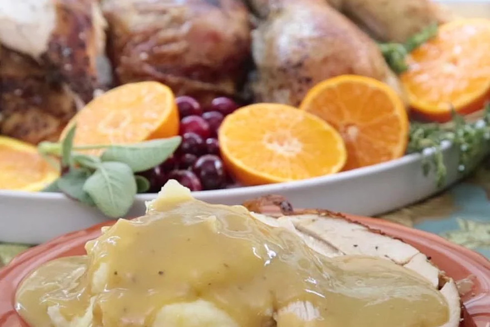

Turkey Gravy

Simple and easy turkey gravy!
Ingredients
- 1/2 cup far from turkey drippings
- 1/2 cup all-purpose flour
- 1 cup liquid from turkey drippings
- 2 cups turkey stock
- ground black pepper to taste
Directions
- Heat fat from turkey drippings in a saucepan over medium-low heat until liquefied, 2 to 3 mintues. Whisk flour into turkey fat until golden, about 5 minutes.
- Whisk liquid from turkey drippings and turkey stock into fat-flour mixture; increase heat to medium and cook, whisking contunuously, until gravy is smooth and desired consistency, 5-10 minutes. Season gravy with pepper.